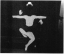
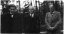
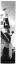

The Bauhaus Idea and Bauhaus Politics
|
Chapter 12. The Part Versus the Whole
Full text
1THE PROCESSES that took place In the Bauhaus after 1923 became increasingly crystallized around the ideal of the 'perfect technician'. It is obvious that by this time the meanings of the words individuum and collective - at least in their everyday usage - had altered in a way closely related to the new worldview and value system emerging at the Bauhaus. In 1918-19 the word individuum referred to bourgeois narrow-mindedness and egotism, against which the artist/intellectual, striving for social-cultural rebirth, set up the ideal of a utopian collective, albeit this Ideal was interpreted in various ways by various groups. As we have seen, the Bauhaus ideal at the outset was a creative community based on the internal egalitarianism of shared tasks, in temporary sequestration from the rest of society - an experimental workshop that would transform itself into a workable prototype before rejoining the rest of society. This Utopian goal was in part invalidated by the changed times, and in part by the fact that the Bauhaus had not evolved into an architectural community or workshop of builders. Another factor was the person of Johannes Itten and his value system, which played a decisive role in the Bauhaus of 1920-21, placing the expressive power and wealth of the personality at the fountainhead of creative work. Thus, increased value came to be placed on individual performance at the Bauhaus, in opposition to the spirit of the founding Manifesto. The consequent internal imbalances endangered the very survival of the school.
2This was demonstrated at the exhibition mounted in the summer of 1922, when the Weimar public approved of the works shown by the reinstated Academy of Fine Arts, while rejecting the Bauhaus works. The Bauhaus was unable to change this situation; it never succeeded in winning over the local community. The works exhibited by the academicians were of course individualistic creations, the products of the very philosophy that Gropius had labelled 'the academy's cult of genius'. But it was this aesthetic that the Weimar public identified with, accepting it as representative of the community at large; while this same public failed to recognize an image of itself in the works of the Bauhaus artists, and rejected any notion of identifying with them. So the Bauhaus could not hope for any contact with the community via its painters. On the contrary, if it intended to survive, such contact had to be sought in a more neutral sphere, by way of handcrafted objects that would presumably refrain from provoking Weimar sensibilities. Therefore it makes sense that the chief event of the 1923 exhibition was the Haus am Horn, and the show of paintings and sculptures at the Landesmuseum took the lowest rank in the order of events. The new values evolving at the Bauhaus, proclaimed by Gropius on the occasion of the exhibition, held personal expression to be less significant than objects produced by collective efforts, objects of immediate utility. In this way the Bauhaus, willy-nilly, had already adopted the values of a society from which it had originally intended to be markedly set apart, so that the Bauhaus no longer maintained any essential separateness from society, other than differences of style and pedagogical approach. The neutralization of art within the Bauhaus, the emphatically greater value placed on design- and production-oriented work, and the acceptance of profit as motivation, all combined to make the Bauhaus conform to the scale of values prevalent in society at large. The school could not remain independent - not even intellectually - of a society on which it depended for moral and material support for its very existence.
3And yet this same society still expelled the Bauhaus, as a consequence of transformations that manifested as historical and political events. These would form a dark backdrop to the veritable cascade of liberated Ideas that poured forth during this fertile, creative period at the Bauhaus.
4The survival of the Bauhaus in Weimar was vouchsafed by a Social Democratic government that acted as a powerful counterbalance to the passions stirred up by various right-wing and nationalist groups. As long as the Social Democrats were in power, every investigation of anti-Bauhaus complaints concluded without impeachment of the school, and all proposals for cutting off funding were answered by a counter-proposal. However, in 1923 there began a chain of political events that eventually resulted in the ouster of the Social Democratic government of Thuringia.
- 1 Lajos Kerekes, A Weimari Köztársaság (The Weimar Republic), Kossuth Könyvkiadá. Budapest, 1985. p. (...)
- 2 Ibid., p. 124.
- 3 Ibid., p. 127.
5Germany had defaulted in its payment of reparations, while France emphatically demanded the payments that were due. Since Germany was not making any cash payments - although, as the French pointed out, it had significant cash resources abroad - and delivered only a small fraction of the reparations in goods, on 11 January 1923, French and Belgian troops occupied the Ruhr region, in order to obtain at least the metallurgical brown coal mined there. The Germans responded with outrage and passive resistance, as well as acts of sabotage. German patriotic feelings surged over into the most extreme forms of nationalism; to make matters worse, the military occupation claimed its death toll, creating martyrs. Money rapidly lost its value - France charged that the inflation was fostered by artificial means, since the strength of the German economy could not have allowed such devaluation of the currency. The number of unemployed rose to over a million and a half,1 and provincial politics shifted to the extreme right or left. In Bavaria, extreme right-wing and nationalist passions peaked during Hitler's 'beer-hall' putsch in Munich on 8-9 November, while in Saxony and Thuringia the lawful elections held at the end of 1922 brought Communists into the governments along with the Socialists. This was unprecedented; Stalin announced that 'if events take a favourable turn, it is easily imaginable that the centre of gravity of the world revolutionary movement would shift from Soviet Russia to Germany.'2 The government of the Reich did not wish to wait until this prediction came true, and the Bavarian military units were ordered to take up positions along the Saxon and Thuringian border zones, ready to attack at a moment's notice. Finally, on 21 October 1923, units of the Reichswehr occupied both territories. Armed workers offered resistance, but in the ensuing conflict the superior forces of the Reichswehr easily triumphed. However, there was a political catch to the situation: the army of the Reich was deployed against the legally elected local state governments. In this connection, the central government had to clarify its stand. Finally President Ebert resolved the crisis by 'referring to Paragraph 48 of the constitution, which empowers the president in especially critical situations to declare a state of emergency and thereby suspend a portion of democratic civil rights. The army was authorized to displace the legally elected governments of Thuringia and Saxony. There could hardly have been a more apt illustration of the paradoxical situation of the Weimar Republic: the first occasion when the president of the democratic republic resorted to the declaration of a state of emergency was the displacement of the constitutionally elected Social Democratic and Communist governments.'3
- 4 Gropius, 'Complaint', Wingler, op. cit., p. 76.
- 5 Miller-Lane, op. cit., p. 80.
- 6 Gropius, Letter to Lily Hildebrandt, Weimar, probably late April/earty May 1924; in Isaacs, op. ci (...)
- 7 See chapter 7, note 19. As Moholy-Nagy Informed van Doesburg In reply to his letter, they had rece (...)
6The deployment of the Reichswehr troops signalled a shift to the right in Thuringia. The new elections, held in early 1924, gave a large majority of votes to the coalition of right-wing parties known as the Ordnungsbund. The Bauhaus and Gropius's private apartment were subjected to searches, as suspected 'hotbeds of communism'. Gropius, in his letter to General Hasse, protested against these outrageous and offensive actions, which cast the onus of politics on the Bauhaus, damaging its reputation in front of both the students and the public at large.4 When a coalition of the DVP and the DNVP (German People's Party and German National People's Party) formed a new government, the general opinion was that the Bauhaus would be summarily expelled from Weimar; this was the solution urged by Emil Herfurth, who had in the meantime become a Privy Councillor. But the government took care, at this early stage, not to become an accomplice of nationalist representatives, who had, in any case, long-term designs. Not wishing to form an alliance with these extreme elements, the government sought the support of moderate Socialists and cautious Democrats, who in turn supported the Bauhaus.5 However, this vacillation on the part of the government vis-à-vis the Bauhaus only fuelled the fires of the Bauhaus's enemies, who renewed their campaign against the school. One characteristic document of this effort was the so-called 'Yellow Brochure', putatively authored by the Weimar locksmith Arno Müller. But Gropius knew that the real authors were Hans Beyer, Josef Zachmann and Carl Schlemmer,6 who also borrowed from Vilmos Huszár's article in De Stijl. Gropius appealed to the international public, but the stream of letters and declarations of solidarity from home and abroad remained ineffective, as were the efforts of the 'Friends of the Bauhaus', who included Marc Chagall, Peter Behrens, Albert Einstein, Gerhart Hauptmann, Arnold Schönberg, Franz Werfel, Igor Stravinsky, Hans Poelzig, Oskar Kokoschka, Josef Hoffmann and Adolf Sommerfeld. Piet Mondrian and Theo van Doesburg wrote letters expressing their concern for the fate of the Bauhaus.7
- 8 Scheldig, op. cit., pp. 38-9.
7Gropius's extraordinary public relations efforts and the mobilization of a considerable number of significant personages on the European intellectual scene could not alter the fact that the Bauhaus had become so entangled in the cogwheels of party politics that the decisions made about it were reliable indicators of the balance of power. The right-wing parliamentary majority whittled the Bauhaus budget down to one half and agreed to extend the masters' contracts only for six months. Under these circumstances work and planning for the future became impossible. On 26 December 1924, three days after the parliamentary decision, Walter Gropius, Lyonel Feininger, Wassily Kandinsky, Paul Klee, Gerhard Marcks, Adolf Meyer, László Moholy-Nagy, Georg Muche and Oskar Schlemmer announced in an open letter the closing of the Bauhaus in Weimar, effective as of 1 April 1925. Gropius's last, belated life-saving idea was to convert the Bauhaus workshops into a production company that would sell its products, or their designs, to industry, enabling the school to earn its way. This logical and realistic Idea was bound to lead to an upswing, in a German economy that was being re-invigorated by American capital introduced through the Dawes Plan. The state would have had to subsidize only the costs of the school building and the salaries of the small faculty. But a number of masters protested against this plan, saying that the Bauhaus was primarily an educational establishment, and as a production company it would not be able to fulfil this function. And indeed, what would have been the fate of the non-productive workshops? What would have become of Schlemmer's stage workshop, Kandlnsky's mural workshop, Klee's glass-painting workshop?8 Even if the rest of the workshops had been able to support these, their fate at the Bauhaus would have been sealed. As the prevailing mood before the 1923 exhibition amply demonstrated, there were many - and especially among the members of the 'productive' workshops - who would much rather have laid claim to the artists' salaries, much less offer to support them. It is quite another question whether, given a new situation, and the survival of the Bauhaus in its entirety, a more favourable financial picture could have eradicated these internal conflicts of interest.
8Actually the 1923 exhibition realized the hopes it had engendered: the Bauhaus received industrial orders, and these could have generated sufficient revenues to redeem Its financial and intellectual Independence. However, inflation swept away these funds. If, as some historians would have it, this inflation was indeed the result of a political manoeuvre, a 'false bankruptcy' created to decrease the value of payable reparations, then at this point In the Bauhaus's history we have an unusually clear Illustration of the direct dependence of the institution and the ideals It embodied upon the overall political picture in Germany. Again we are made to see that it was not only the Weimar interest groups that shaped the fate of the Bauhaus, but forces working far beyond, moving these groups themselves. The defeat of the Saxon and Thuringlan left by forces deployed by the central government emphatically and unmistakably demonstrated that in Germany there was no leftist alternative, and that the democratic constitution had offered no guarantee at all for any ideology or activity that significantly differed from the right-wing and conservative positions. The Bauhaus members and Gropius himself could not have been prepared for this. From the outset, they had considered their opponents to be only the provincial, local bureaucrats and academic artists, against whom they could seek the support of the central government and international opinion. The possibility that all of Germany would eventually be ruled by the likes of Emil Herfurth did not even occur to them; it would have seemed an absurdity.
9Between 1919 and 1923 Gropius had come to accept the necessity of meeting the conditions set by society. By making compromises he still hoped to realize the intellectual and artistic strivings of the Bauhaus. But all this time he had been thinking along the rules of fair play and the invincibility of rationalist values; in other words, he believed in the firmness and permanence of the status quo proclaimed by the Weimar constitution. By reattuning itself to industrial design the Bauhaus went more than halfway towards meeting society's needs and now considered the high-quality fulfilment of these needs to be its goal. Thus the school showed its willingness to integrate itself into society, in exchange for freedom of thought and creative work. This attitude was circumspect and rational, for the society that Gropius was thinking of - the republic based on the Weimar constitution - could not but gladly accept the endeavours of the Bauhaus on the behalf of the community, including innovative experimentation.
10But Germany in 1924 was no longer what the Bauhaus members had believed it to be.
- 9 Schlemmer, Letter to Otto Meyer, Weimar, early October 1923; in T. Schlemmer (ed.). op. cit., p. 1 (...)
- 10 Schlemmer, Diary entry, 18 March 1924; ibid., pp. 151-2.
- 11 Ibid.
11Meanwhile, production in the workshops was on an upswing. Josef Hartwig's chess set was created around this time, each basically square piece carrying a formal element related to its movement; also the table lamp designed by Wilhelm Wagenfeld and Karl Jucker, which is still being produced. Numerous other successful furniture, textile and metal designs date from this period. More and more students matured into creative individualities; the first generation of graduates was apparently justifying Gropius's practice of dual workshop leadership. Josef Albers, Gunta Stölzl, Marcel Breuer, Herbert Bayer, Joost Schmidt, Otto Lindig, Farkas Molnár, Hinnerk Scheper, all possessed highly schooled yet original formal abilities as well as the necessary professional and technical skills. As Walter Scheidig aptly observes, perhaps the issue was no longer a matter of the unify of art and technology, but of craft and technology. Indeed, art in the strict sense of the word no longer seemed to fit into the new framework: 'These days Gropius is wishing his painters would just go to the devil', wrote Schlemmer.9 At the same time, the works of Albers, Stölzl and Breuer show an unmistakably intuitive sense of formal design, while their rational, functional forms emanate a characteristic surcharge of aesthetic qualify. To be sure, while objects designed at the Bauhaus were steeped in artistic formal qualities, all the same, painting, sculpture and subjective modes of expression In general were left out of any Immediate contact with the activities that constituted the daily life of the school. In March 1924, Schlemmer noted in his diary: 'The declaration referred frequently to the artist, a term and a type which are actually taboo at the Bauhaus. Well, how about the artist? According to Molnár he is merely an intelligent housepainter executing the commands of "higher necessity".'10 Schlemmer believed that 'the ways will part':11 the architectonic-constructive tendencies of the new art would resolve into the immediately useful design of utilitarian objects, while 'absolute art' and 'pure form' would continue to deal with the most Important aspect, the human element.
- 12 Ibid., entry of 12 November 1924, p. 156.
12In the end Schlemmer was perhaps the only one who did not hesitate to admit that the grand new style, the prerequisite of the Gesamtkunstwerk, the original ideal of 1919, had not been realized and was, in fact, unrealizable. Whereas Gropius, submerged as he was in the stream of ongoing changes, in keeping up with daily contingencies, in spite of all the readjustments, still persisted in the unbroken and consistent experience of what he called the 'Bauhaus idea', Schlemmer gave a precise and frank appraisal of the situation in his diary entry of 12 November 1924: 'Perhaps the ultimate wisdom is: compromise. Developments in Germany and in art are being cut off before their prime. They are falling victim to the tempo of the times. I feel absolute freedom and metaphysical fulfilment have not yet been attained; the degree of formal perfection or of classic form necessary to the development of grand style has not been reached.'12
- 13 The Bauhaus was a state institution, so that if did not have the power to dissolve itself autonomo (...)
- 14 Wingler, op. cit., p. 7: Frankfurt am Main would have accepted the painters, but not the director.
- 15 Fritz Hesse, 'Von der Residenz zur Bauhausstadt', author's own edition (autobiography), p. 206.
13After the declaration of the Weimar Bauhaus's dissolution,13 there were offers inviting the school to Frankfurt am Main and to Dessau. Gropius and the masters chose Dessau,14 where Chief Mayor Fritz Hesse and the art historian Ludwig Grote, state supervisor of historic monuments, had done everything in their power in order to assure a favourable reception for the Bauhaus. Hesse organized an effective campaign to popularize the Bauhaus. He headed a delegation to visit the Bauhaus in Weimar and to hear a lecture by Gropius: he invited Kandinsky and Gropius to visit Dessau. Gropius gave a talk about the alms of the Bauhaus to an audience of one thousand that included several ministers of the state and many of the leading citizens.15 At the same time, in Dessau, a town similar in size to Weimar and with similar local attitudes, the Bauhaus had its share of opponents who resented it either because of the school's leftist reputation or because of local craft interests. But whereas in Weimar the school had been a state institution, in Dessau it came under town jurisdiction. Here the municipal council voted the school's budget.
- 16 Scheldig. op. cit., p. 40.
- 17 Lange, Letter to Gropius, February 1924; Bauhaus Archiv, unit no. 7/4.
- 18 Hesse, op. cit., p. 211.
14In an open letter the students of the Bauhaus in Weimar expressed their solidarity with the masters,16 whom they would follow to Dessau. Here Gropius put an end to the dual leadership of the workshops. After Josef Albers, five other graduates were appointed junior masters: Herbert Bayer to conduct the advertising and typography workshop, Marcel Breuer the cabinet-making workshop, Hinnerk Scheper, the mural painting workshop, Joost Schmidt, the sculpture workshop and a course in lettering graphics, and Gunta Stölzl, after the departure of Georg Muche in 1927, to head the textile workshop. A few crafts masters left the school, and one of the art masters, Gerhard Marcks, accepted an appointment in Halle, as head of the department of ceramics at the School of Applied Arts. Also gone was Adolf Meyer, Gropius's closest design associate. Emil Lange, who disagreed with Gropius about the conversion of the Bauhaus into a production plant, likewise left the school.17 Dr Haas, a young Dessau economist, was appointed as the new business manager. In the autumn of 1925 the Bauhaus was incorporated as a limited liability corporation. The registered capital required for incorporation was provided by that long-standing patron of the Bauhaus, Adolf Sommerfeld, obviating the necessity of approval by the municipal council. In order to guarantee that the town's Interests would be safeguarded, the Bauhaus's business manager became the financial director of the new corporation.18
- 19 Nerdinger, op. cit., p. 70: 'The planning process is interesting in more than one respect: Since A (...)
- 20 Ibid.
15The first and perhaps most significant act of the Bauhaus in Dessau was, at last, an architectural opus: a version of the Gesamtkunstwerk as it was conceivable in 1925. Gropius presented the Dessau municipal council with a proposal for an architectural complex consisting of a workshop building, a school building and a dormitory with studio apartments for 28 students. Rather unexpectedly, the entire project was approved. Construction was begun in September 1925.'19 One wing of the brick- and glass-covered, reinforced concrete structure consisted of workshops and classrooms. At the level of the second and third floors a bridge supported by four pillars joined this to the other wing, which housed office space, faculty rooms, and additional classrooms for the Dessau Polytechnic Institute. Offices took up the lower level of the bridge; the upper level was reserved for the future architecture department and for Gropius's private office. There was an exhibition area in the workshop wing, and on the ground floor, near the entrance, a large lecture hall, theatre and cafeteria were clustered so that the three could be combined into one large space. Through this area one approached the six-storey dormitory building, the basement of which included a gymnasium and shower rooms. 'Thus, the Bauhaus, like a small world, contained within itself all spheres of life: living, eating, working, learning, entertainment, sports, and recreation. This combination of activities typified the famous community spirit, parties, and events of the Bauhaus,' writes Winfried Nerdinger.20
- 21 Quoted by Whitford, op. cit., p. 159.
16One could reach any part of the building via the inner corridors; according to Xanti Schawinsky, one of the students, the 'wonderful community spirit' of the Bauhaus was In large part due to Gropius's building. 'All you had to do to call a friend was to step out onto your balcony and whistle,' he wrote.21 All of the interior finish, painting and furniture of the building was executed by the various Bauhaus workshops.
- 22 Whitford, op. cit., p. 158.
- 23 Pevsner, op. cit., p. 215.
- 24 Nerdinger, op. cit., p. 74.
17The Bauhaus building evokes the Alfeld Fagus Works. The concealed nature of the underlying structural elements, the wall of glass surrounding the workshop wing ('in Dessau the Bauhaus was known as "the Aquarium'")22 and the likewise largely glass-covered bridge realize a confident union of precision and elegance. This 'etherealization' of architecture, as Frank Lloyd Wright called it in 1901, is one of the most prominent characteristics of the new style.23 According to Nerdinger, 'Especially the glass wall in the workshop wing illustrated Gropius's old desire to create a point of crystallization for the new era. It is much more than just a "transparent" plane ... The glass body Is the last symbol of the expressionist reform movement and as such is not to be judged from a functional point of view (with its orientation to the west, the glass heated up in summer and the workshops could not be kept warm in winter).'24
18Indeed, ever since the proclamation of the ideal Gesamtkunstwerk ('the crystallized symbol of a new faith'), this was the first chance Gropius had for epitomizing his concept of the timely and modern in an architectural opus. He was given the opportunity to create an integral work of art that was suitable for the complex functions of the Bauhaus and also served as the equivalent of a manifesto. As a material glass was the most concentrated and radiant symbol of the new spirit in architecture. The glass wall created a blurring of the boundary between 'inside' and 'outside', and its lightness and ethereal nature added a triumphant note to the slender reinforced concrete supporting structure. These properties of glass contributed the emotive surplus that was so important for Gropius. By injecting functionalism into the representative, highly expressive architectural Ideals of the former Glass Chain, Gropius offered proof positive that here, indeed, was a new unity.
- 25 Ibid., p. 76.
19In September 1925, parallel to the construction of the Bauhaus building, construction was begun of the three pairs of semi-detached masters' residences: flat-roofed homes, complete with studios, for Kandinsky, Klee, Moholy-Nagy, Feininger, Schlemmer and Muche, and a free-standing house for Gropius. These houses were ready to be occupied in August 1926. The interior fixtures and furnishings were products of the Bauhaus workshops, and the interior walls were painted by the residents themselves. 'As the Bauhaus building was to be the architectural manifestation of the Bauhaus idea, the master houses served as demonstrations of a modern life and living style,'25 writes Nerdinger. The built-in wardrobes, the storage closets opening at both ends and the stately proportions all illustrated the Bauhaus-evolved notions of a normative home lifestyle. These houses, with their pleasantly articulated masses derived from prismatic shapes, are generally thought to be Gropius's most successful residential designs. Although the white walls and the windows and doors interrupting them did not present the two-dimensional, painting-like image of De Stijl buildings, these houses possess another kind of harmony. (Gropius's house and the building next to it were destroyed during the war; the others were renovated, but are structurally impaired.)
- 26 Hesse, op. cit., p. 222.
- 27 Ibid.
20The new Bauhaus building was dedicated on 4 December 1926. The government of Anhalt approved the new Bauhaus statutes on 20 October, and granted the school university status. The new designation of the Bauhaus became Hochschule fur Gestaltung - College of Design. More than fifteen hundred guests arrived for the opening ceremonies, including the Dessau notables, among them Professor Junkers, the owner of the airplane factory. Other prominent guests travelled from Berlin, Leipzig, Holland, Switzerland, France and Denmark. Gropius gave an address in which he emphasized the consistent path of the Bauhaus, the purity of its ideals, as well as the importance of maintaining the ties between industry, the crafts, the sciences and the 'creative design forces' (by which he probably meant the arts).26 In a reply address, Dr Edwin Redslob, art commissioner of the Republic (Reichskunstwart) proclaimed: 'The Bauhaus has the right to experiment, and the duty to produce.'27 Meanwhile the new local opponents of the Bauhaus were pressing leaflets into the hands of guests arriving for the evening ball.
- 28 Fourteen volumes appeared in the Bauhausbücher series. See Select Bibliography, below.
21The first issue of the periodical bauhaus appeared at the time of the building's dedication. This quarterly publication was edited, until the 1928/1 issue, by Gropius and Moholy-Nagy; the latter also edited the series of Bauhaus books. While the quarterly tended to be a forum for the school's internal life, the book series included theoretical monographs and manifestos.28
22The new Bauhaus complex emanated an entirely different atmosphere than the van de Velde building in Weimar. The new building, with its clean lines manifesting a strictly functional modernism down to the smallest detail, its food elevator serving every floor, and its totally contemporary lighting fixtures and furniture hardly gave the Impression of a craft school. It was the embodiment of the spirit of objective and effective, precise and modern design work.
- 29 Ct. Herzogenrath, 'Typographie in der Reklame-Werkstatt'; In bauhaus Utopien, op. cit., pp. 103-15 (...)
- 30 Siegfried Gledlon, 'Zum neuen Bauen'; In Der Cicerone: Halbmonatschrift für Künstler, Kunstfreunde (...)
23The new typography, as elaborated by Herbert Bayer, was conceived in the same spirit: simplified, rounded off - a type of grotesque or sans serif - consisting of lower case letters only. It gave a unified look to every Bauhaus publication, exhibition flyer, piece of stationery, and had perhaps the greatest single role in defining the characteristic visual profile of the Bauhaus.29 The omission of capital letters, even at the cost of violating German orthography, had deep roots in the modernism of the age. Similarly, the passionate, emotional ring of Ziel '(destination', 'goal') was replaced by the more modest and direct Zweck ('aim', 'design'); instead of Theater, Bühne ('stage') was preferred, and the rejection of Kunst ('art') in favour of Gestaltung ('design', 'form-creation') all signalled a shift in outlook regarding the entire field of fine arts and applied art. The most significant indication of this was the altered use of the word for architecture, perhaps the clearest equivalent of the shift to lower case letters. Instead of the implicitly capitalized ring and self-importance of Architektur, the modest and practical Bauen ('build', 'construct') came to be used. Siegfried Giedion wrote about the Werkbund exhibition of 1928, 'Neues Bauen' ('New Architecture'): 'Why is this exhibition entitled "Neues Bauen", and why not simply "Neue Architektur"? We are not intimidated by the word Architektur, but it has a delimited meaning that is no longer valid today. The concept of architecture evokes the usual … large-scale stone buildings, while today's materials, steel and reinforced concrete, condense the actual supporting structure of the building into a slim skeleton. This necessarily leads to formal solutions different from that of stone … Architecture is the last to enter the process of industrialization. The transfer from handicrafts to industrial production, from individual to collective creation, has been going on with compelling force for some centuries. This means that the same arguments that were used against mechanized looms, railroads and sewing machines are now being used against architecture.'30
- 31 Kassák. 'Vissza a kaptafához' (Back to the Workbench); in MA. IX/1, Vienna. 15 September 1923.
- 32 Kállai, 'Architektura'; ibid.
- 33 Taut, 'Die Stadtkrone'. Jena. 1919.
- 34 Källai. op. cit.
24Now that typography, the design of objects and the building itself imbued the Bauhaus with a unified outlook - even if it was not yet a unified style - the school indeed came very close to the idea of the Gesamtkunstwerk in its original, 1919 sense. For what was emerging was precisely the approach and the closely related set of design ideas that could point the way to a new style. The change in outlook that came about at this time had been formulated even before Giedion by Kállai in 1924, following the dissolution of the various Constructivist Utopias (when Lajos Kassák issued his terse slogan, 'Back to the workbenchl'):31 'And where there is no cult developed around ideological abstractions, there can be no architecure in the old sense of the word that includes every subordinate art form and every formal detail … Today's architecture, too, possesses a central idea. It is maximal efficiency.'32 Kállai had outspokenly stated what Gropius never said in so many words. While Gropius spoke about the continuity of the Bauhaus programme and Bauhaus concept, Kdllai called this transformation by its proper name: 'The new architecture ... should not purport to be more than unostentatious clothing or shelter. Nor should it try for the role of Stadtkrone33 ['crown of the city'] ... and be a gawky idol, squatting on the horizon in the manner of pyramids and domes ... It is sad enough that the monumentality of factory smokestacks, blast furnaces and tenements oppresses our daily life. Therefore let us not wish for additional stone monsters, adulatory ideological monoliths, to tower over us.'34
25No matter how significant the divergences in the work of the Bauhaus artists and designers may be, in one vital respect a collective creation did come about at the Bauhaus. It became clearly obvious by the 1923-4 school year, not only in the projects done in the Preliminary Course, but in the objects created in the workshops as well, that everything had to be rethought, starting with the basics, the elementary forms and qualities -and in this the students received invaluable help from Klee and Kandinsky, of all people. Klee's 'Theory of Form' course, and Kandinsky's course, 'Form and Colour Studies', both analysed the properties of the basic units of composition, the elementary forms and colours. No matter how far these two men had retreated from the school's new, industrial orientation and technocentric outlook, nonetheless they introduced an entire generation of students to the neutral fundamental principles of pictorial composition, rethinking with them the meanings of point, line, plane, movement -the most elementary and minimal visual gestures.
26This kind of reductionism, such restriction of formal and expressive means to the basics was the equivalent of taking a step back before leaping forward. In order to develop a new world of form, one had to return to the neutral basics not only to circumvent the existing formal order, but also to realize the more far-reaching task of reattuning the sensibility. This of course would not have been possible If there had not been a call for it 'in the air', for lack of a better term. After the by now familiar barrage of expressionist orgies in colour and form that stretched pictorial dynamics and histrionics to the limits, the new sensibility had to be returned to a resting point, a formal and emotive ground zero, where it could begin anew to register the weight and importance of minimal stimuli. The scale had to be altered. Here was a call for sober economy of means, after the prodigal outpouring of expressive energies. The basic unit of the new pictorial and formal expression - the new aesthetics -became the meaning inherent in the smallest increments in value differences, the slightest shifts. By making artist and viewer again receptive to minimal stimuli, the foundations of a new formal language were laid down.
- 35 See chapter 6, note 36.
27The recently appointed young masters had an outstanding role in this process. For them, it would have been strange and inconceivable to make a vow such as Muche's when he, a painter, had been appointed to head the textile workshop: 'I promised myself that never in my life would I let my hands prepare a textile design'.35 The new masters were far more open-minded and multifaceted than this. In fact they were equally at home in handling practical workshop problems, dealing with materials and composing works of art. Marcel Breuer abandoned a career as a painter for the sake of furniture design, and then switched to architecture, while continuing to work in the theatre. Gunta Stölzl's textiles were in many instances works of visual art. Joost Schmidt's sculptures were expressive by themselves, as well as functional as architectural elements. In addition, while chiefly a sculptor, he also excelled in applied graphics. These young masters were far less restricted by specialization, far less limited in scope, than their crafts masters had been. In addition, what they learned from their artist masters was not merely a mode of work directed towards the creation of the autonomous work of art, but the basic elements of composition.
- 36 Whitford, op. cit.? p. 70.
The most striking characteristic of the moderately successful as well as the subsequently famous Bauhaus students is their extraordinary versatility. It would not be an exaggeration to say that most of them had turned their hands to everything before leaving the school... They could paint, take photographs, design furniture, throw pots and sculpt. Herbert Bayer and Marcel Breuer could design buildings as well. Franz Singer, one of the students who followed Itten from Vienna, was interested only in painting when he arrived In Weimar. At the Bauhaus he learned to master several crafts, and after he had qualified he became an architect and interior decorator, working much later as a consultant in London for the John Lewis Partnership. Marianne Brandt, who joined the Bauhaus in 1924 and became renowned for her adjustable metal lamps, was also a talented painter, and made photomontages that are witty, imaginative and clever.36
28These young artists were in fact a new type of creative worker, and not merely artists in the traditional sense of the word. Their works do not convey highly emotional or deeply personal experiences. Instead, they stand for reliable quality, solid construction, witty ideas and a high aesthetic level of realization. Their artifacts, instead of traversing the distances from soul to soul, simply move from the designer's desk to the consumer's table. Even the pictorial compositions of Albers, Schmidt or even Gunta Stölzl (excepting some of her textile compositions) are more readily seen as formal intellectual games, systematic actions aimed at uncovering the internal orders of geometry or the colour scale, rather than impulsive, unique self-revelations, or subjective manifestations illuminating the underlying issues of existence.
- 37 Herzogenrath, 'Josef Albers und der "Vorkurs" am Bauhaus'; in Wallraf-Richartz Jahrbuch. Cologne, (...)
- 38 Wick. op. cit., pp. 165-6.
29This was the spirit in which Josef Albers conducted his Preliminary Course, demanding primarily constructions from the students. Unlike Itten and Moholy-Nagy, he interpreted textural exercises by asking students to illustrate, through graphic and painterly means, the diverse materials and textures - instead of indulging in actual tactile experiences.37 Along the lines of the new spirit, and enhancing its practical features, he placed extraordinary emphasis on economy of materials. He made his students aware of the changed circumstances: it was no longer the philosophic viewpoint that determined the value of pedagogical or artistic work, but considerations of economics which had to be accommodated. As the most important task he singled out the totally efficient use of materials, stressing the supreme importance of no waste. A basic premise was that no material should be lost; the negative shapes of materials that were cut out also had to be used, if possible in the same work (this constituted a true coup) or else independently. Those students received praise who, using one tool and one procedure (for example, scissors and cutting) created large, complex compositions of maximal interest, out of a single material.38 One of the students, Hannes Beckmann, writes in his memoirs:
- 39 Ibid.
Josef Albers entered the classroom with a bundle of newspapers under his arm. 'Ladies and gentlemen,' he said, 'we are poor, and not rich. We cannot afford to waste materials or time. Every piece of work has a certain starting material, and therefore we must examine the nature of this material. Towards this end we wish to experiment at first without creating anything. Now we are going to rely on our sense of beauty. The usefulness of a form depends on the material we are working in. Remember that often the fewest gestures take us the longest way... I would like you to take these newspapers in hand, and make something more out of them than what they are at present. I would also like you to respect the material, shape it intelligently, and with special attention to its particular characteristics. If you can do without any accessories, such as cutters, scissors or glue, all the better' . . . Several hours later he returned, and made us lay out the finished objects on the floor.39
30Multifaceted training, first-hand sensory contact with materials, and an overview of the entire process of production were all experimental solutions to the question that was the central issue at the Dessau Bauhaus. Like the unification of art and technology, this, too, remained an insoluble dilemma: how to realize the ideal of the whole man, to replace what Moholy-Nagy liked to call the partial man.
6 Reconstruction of a work in paper prepared for Josef Albers's course
- 40 Isaacs, op. cit., p. 416-17.
31Gropius made a habit of regularly Inviting guests to the Bauhaus. Architects, philosophers and composers came from all over Europe to Dessau, to give lectures, to meet the Bauhaus people, and to get to know the school. These visitors opened up the intellectual avenues leading to the Bauhaus, and allowed contemporary European culture to stream past the steadily rigidifying walls of Dessau. Among those invited was Béla Bartók, who traveled to Dessau on 12-13 October 1927, after the performance of his First Piano Concerto in Frankfurt. At a concert he gave for the Friends of the Bauhaus he performed some of his own works as well. To the surprise of many, he showed only passing interest in the Bauhaus stage, but was deeply receptive to the long-term implications of the work going on at the school. He was especially taken by Kandinsky's 1926 volume. Point and Line to Plane, seeing it as evidence of the connections between modern music and modem art.40
- 41 For the designs, see Wensinger (transl.), op. cit., pp. 57-62 ('U Theatre', p. 86; Groplus, 'Plan (...)
- 42 Moholy-Nagy, Von Material zu Architektur (1928). revised edition. Wittenbom and Co., New York. 194 (...)
- 43 Gropius, Scope of Total Architecture, Collier Books. New York, 1962, p. 20.
32In Dessau - especially after the erection of the Bauhaus building - the ideal of the Gesamtkunstwerk shifted from architecture, which unites the arts and crafts, to the human being. It was no longer an object, but an ideal human being, that was expected to be the realization of wholeness as a utopianistic objective. Although there arose some absolutely Utopian architectural designs - Gropius's plan for a 'Total Theatre', Andor Weininger's drawing of a 'Spherical Theatre', and Farkas Molnár's 'U-Theatre',41 all of them analogies of the universe - still, Gropius, Schlemmer, Moholy-Nagy and many others at the Bauhaus thought in terms of an ideal far beyond practical tasks, which they called the whole man. In their thought-experiments they attempted to resolve the contradictions between an immediate, sensory experience of life and the hazy figure of the 'perfect technician' at the control panel of a future automated worid-machine. The microcosm of the stage was the most suitable experimental field for these Utopias, since the mechanically controlled stage machinery and the spherical design of these utopianistic theatres presented with striking three-dimensionality the form and fate of the coming human who would live a new kind of life in the cosmos. 'A specialized education becomes meaningful only if an integrated man is developed in terms of his biological functions, so that he will achieve a natural balance of intellectual and emotional power. Without such an aim the richest differentiations of specialized study ... are mere quantitative acquisitions, bringing no intensification of life, no widening of its breadth … these are the foundations for developing a mastery of all of life, for finding one's proper place within the community.' So writes Moholy-Nagy under the heading 'The future needs the whole man'.42 But this 'proper place within the community' demanded or presupposed the performance of a specialist function and a 'specialized training'. If humans were to be emancipated from such limitations, in exchange for the intellectual ability to oversee a whole universe they would have to give up the sphere of first-hand experience, life's sensory dimensions. Whereas Gropius and Moholy-Nagy had intended to save for future generations a certain characteristic of the craftsman, the ability to oversee the entire creative process and the opportunity of freely changing it - as opposed to the Industrial worker who Is condemned to execute a mechanical, partial function that hinders personal development. What is more, the craftsman is also able to follow the path of his product in society. The whole man, the new human type of the future, would only be able to compete with his craftsman forerunner by altering the relationship of man and machine: by acting only in the capacity of designer. Instead of adjusting his labour to the requirements and possibilities of machines that are primarily geared to produce in maximal quantities, the new man, on the basis of altered needs, would prescribe to the machine what and how it should produce. The new aim was 'evolving goods and buildings specifically designed for industrial production'.43
- 44 ibid., pp. 20-5.
33At the same time it meant recognizing that 'the machine is... an instrument which is to relieve man of the most oppressive physical labour and serve to strengthen his hand so as to enable him to give form to his creative impulse … The work of the new man will become an organic part of unified industrial production ... for creative freedom does not reside in the infinitude of means of expression, but in free movement within Its strictly legal bounds'.44 Therefore the worker must turn into an engineer; and here, according to Gropius's ideas, we are dealing with a transformation of handicrafts and art that would meld the creative intellectual and manual work into a single design process. Design means the formal and structural shaping of the product along the lines of its function, as well as the specification of its production technology. Thus the designer must be familiar with the consumers' needs in order to know what has to be designed; and with the means of production, the machines, in order to know the technological limitations within which the object has to be conceived. This way man is freed of actual physical labour, or at least such labour would not have to follow the pace and rhythms of machine production. Nonetheless, a considerable price must still be paid: the work of the human intellect and imagination - design - must be routinely adjusted to the machine. But this idea should not be read as a restriction of unlimited human intellectual capacities to fit the bounds of technology, a voluntary decision to stay 'within limits set by stringent laws'. On the contrary: it should be taken as a celebration of the endless possibilities of a technology that would provide wings for human imagination and creativity. The new ideal is the human being capable of maximal enjoyment of the new potentials - 'the perfect engineer of the world'. And, in order to preserve at least some memories of the organic, material world, Moholy-Nagy decided to continue to teach tactile exercises and the study of materials in his Preliminary Course.
- 45 Kállai. 'Korrektúrát'; see chapter 8, note 28.
- 46 ibid.
- 47 Schlemmer. 'Bühne'; in Wensinger (transl.), op. cit., p. 91.
34The first, Gropius-directed years of the Dessau Bauhaus saw stage works that were exclusively mechanical variety shows, plays of audio-visual form. These were the mechanized colour/form compositions of Andor Weininger and Heinz Loew, evoking a world in which, according to Ernó' Kállai, 'human fates would be coordinated as traffic patterns are on the tracks of an electric toy train: without accidents and catastrophes.'45 But Kállai immediately appends the critique of such Utopias: 'But a/so without community. Because in a community of humans where entire networks of interpersonal relations, with all their mutual interdependences or autonomies, are laid open in a predetermined constellation, there cannot be shared fates - for lack of fatality - and beyond this, there cannot be emotional ties, shared feelings. Humans, whose consciousness, its entire form and content untouched by unconscious impulses, lies exposed perfectly visible for themselves and for others, cannot experience true union, beyond practical alliances and transient associations. Their relations, lacking any tragic potential, and without a past, cannot help but remain mechanical and superficial.'46 Schlemmer himself expressed similar ideas in 1927, as he drew his conclusions from the mechanical stage: 'Since we do not have a perfected mechanical stage ... man remains perforce our essential element. And of course he will remain so as long as the stage exists. In contradistinction to the rationalistically determined world of space, form, and colour, man is the vessel of the subconscious, the unmediated experience, and the transcendental.'47
35In the end it was this unavoidable fact that shipwrecked these Utopias; it was the acknowledgment or neglect of these dimensions that was the true watershed between the so-called artistic sphere of the Bauhaus and the design sphere. Klee, Kandinsky and Schlemmer were unable to find a common language, or more accurately, an actual intellectual platform and work programme to share with Moholy-Nagy and Gropius, whose work and interpretation of the Bauhaus's goals focused on the more outward, social-oriented and definable activities. Of course the questions remain: to what extent can an educational institution be permeated by philosophy? And is artistic radicalism compatible with social radicalism that is, in comparison, so much tamer, and much more of a public property?
- 48 'Groplus über den typisierten Siedlungsbau' (lecture text); in Magdeburgische Zeitung. 16 October (...)
36Gropius himself desired to resolve the dilemma of part versus whole in the field of architecture, in an original conclusion drawn from the relation of human and machine. He posited a characteristically Groplus-like equilibrium, in a speech delivered In 1927: 'Individual freedom can be guaranteed if only certain parts are standardized, whereas the rest of the building Is shaped according to personal requirements.'48 This proposal, although not the cheapest way of constructing dwellings, would have been easily realizable. But if this formula had indeed guaranteed that soothing equilibrium, satisfactory to all parties, between the opposed poles of part and whole, individual and collective, individuum and society, then there would have been no need for the existence of the Bauhaus.
Notes
1 Lajos Kerekes, A Weimari Köztársaság (The Weimar Republic), Kossuth Könyvkiadá. Budapest, 1985. p. 116.
2 Ibid., p. 124.
3 Ibid., p. 127.
4 Gropius, 'Complaint', Wingler, op. cit., p. 76.
5 Miller-Lane, op. cit., p. 80.
6 Gropius, Letter to Lily Hildebrandt, Weimar, probably late April/earty May 1924; in Isaacs, op. cit., p. 327.
7 See chapter 7, note 19. As Moholy-Nagy Informed van Doesburg In reply to his letter, they had received a similar communication from De Stijl architect Cornells van Eesteren.
8 Scheldig, op. cit., pp. 38-9.
9 Schlemmer, Letter to Otto Meyer, Weimar, early October 1923; in T. Schlemmer (ed.). op. cit., p. 144.
10 Schlemmer, Diary entry, 18 March 1924; ibid., pp. 151-2.
11 Ibid.
12 Ibid., entry of 12 November 1924, p. 156.
13 The Bauhaus was a state institution, so that if did not have the power to dissolve itself autonomously. The state, however, accepted and approved the dissolution of the school, since it was publicly announced.
14 Wingler, op. cit., p. 7: Frankfurt am Main would have accepted the painters, but not the director.
15 Fritz Hesse, 'Von der Residenz zur Bauhausstadt', author's own edition (autobiography), p. 206.
16 Scheldig. op. cit., p. 40.
17 Lange, Letter to Gropius, February 1924; Bauhaus Archiv, unit no. 7/4.
18 Hesse, op. cit., p. 211.
19 Nerdinger, op. cit., p. 70: 'The planning process is interesting in more than one respect: Since Adolf Meyer, head of Gropius's office, had not moved to Dessau, Gropius asked his old co-worker Carl Fieger to work on the design. Later, Mrs Fieger made some general comments about the collaboration: "her husband... made some sketches which Gropius then changed and used to explain his Ideas." it is unclear whether it was Reger or Ernst Neufert, Meyer's successor as head of the office, who continued working on the project. In any case, Gropius, who practically never drew himself, succeeded on the basis of his verbal abilities, without Meyer, in creating an excellent design... Because Gropius wanted to make the new Bauhaus building a showpiece and working model of his theory of art and architecture, it is safe to assume that in this case he was most especially Involved in the design.'
20 Ibid.
21 Quoted by Whitford, op. cit., p. 159.
22 Whitford, op. cit., p. 158.
23 Pevsner, op. cit., p. 215.
24 Nerdinger, op. cit., p. 74.
25 Ibid., p. 76.
26 Hesse, op. cit., p. 222.
27 Ibid.
28 Fourteen volumes appeared in the Bauhausbücher series. See Select Bibliography, below.
29 Ct. Herzogenrath, 'Typographie in der Reklame-Werkstatt'; In bauhaus Utopien, op. cit., pp. 103-15. 'The lower case lettering went hand in hand with the new design, and, along with the Dessau Bauhaus building, became one of the stumbPng blocks that elicited the Nazis' hatred. At the time when the Dessau mayor Hofmann (who, unlike his superior, Chief Mayor Hesse, was no friend of the Bauhaus) prohibited lower case writing, and Instructed government officials not to accept any documents written in that style, the Nazi Party, in the heat of the election campaign, was ready to tear down the Bauhaus building.' (p. 112)
30 Siegfried Gledlon, 'Zum neuen Bauen'; In Der Cicerone: Halbmonatschrift für Künstler, Kunstfreunde und Sammler, Berlin, Klinkhardt und Biermann, Leipzig, 1928, pp. 210-12.
31 Kassák. 'Vissza a kaptafához' (Back to the Workbench); in MA. IX/1, Vienna. 15 September 1923.
32 Kállai, 'Architektura'; ibid.
33 Taut, 'Die Stadtkrone'. Jena. 1919.
34 Källai. op. cit.
35 See chapter 6, note 36.
36 Whitford, op. cit.? p. 70.
37 Herzogenrath, 'Josef Albers und der "Vorkurs" am Bauhaus'; in Wallraf-Richartz Jahrbuch. Cologne, 1979-80.
38 Wick. op. cit., pp. 165-6.
39 Ibid.
40 Isaacs, op. cit., p. 416-17.
41 For the designs, see Wensinger (transl.), op. cit., pp. 57-62 ('U Theatre', p. 86; Groplus, 'Plan for a Total Theatre'). For Weininger's design of a Spherical Theatre, see Michaud, op. cit., p. 109.
42 Moholy-Nagy, Von Material zu Architektur (1928). revised edition. Wittenbom and Co., New York. 1946, p. 15.
43 Gropius, Scope of Total Architecture, Collier Books. New York, 1962, p. 20.
44 ibid., pp. 20-5.
45 Kállai. 'Korrektúrát'; see chapter 8, note 28.
46 ibid.
47 Schlemmer. 'Bühne'; in Wensinger (transl.), op. cit., p. 91.
48 'Groplus über den typisierten Siedlungsbau' (lecture text); in Magdeburgische Zeitung. 16 October 1927; quoted by Isaacs, op. cit., p. 419.
List of illustrations
|  | |
|---|---|
| Caption | 5 Schlemmer's theatre: 'Black and White' |
| URL | http://books.openedition.org/ceup/docannexe/image/1175/img-1.jpg |
| File | image/jpeg, 719k |
| Caption | 6 Reconstruction of a work in paper prepared for Josef Albers's course |
| URL | http://books.openedition.org/ceup/docannexe/image/1175/img-2.jpg |
| File | image/jpeg, 697k |
|  | |
| Caption | 7 Gropius with Béla Bartók and Paul Klee in 1927 |
| URL | http://books.openedition.org/ceup/docannexe/image/1175/img-3.jpg |
| File | image/jpeg, 503k |
|  | |
| Caption | 8 The Bauhaus as Stage |
| URL | http://books.openedition.org/ceup/docannexe/image/1175/img-4.jpg |
| File | image/jpeg, 370k |
© Central European University Press, 1995
Terms of use: http://www.openedition.org/6540
Read

{kind=link}
{kind=link}
{kind=link}
{kind=link}
{kind=link}
{kind=link}
{kind=link}
Buy
Print version